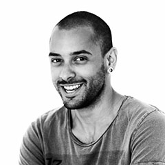

Cutting Costs
The Lost Robots are a coalition, not an agency. This means that when you work with us you don't get charged overheads for expensive office space and non-billable staff members. We work for ourselves, own our own tech, pick our own teams and manage ourselves and our projects.
No middleman
This also means that throughout our relationship, you will always be dealing with the people who are actually building your product. We've cut out the middleman. We find that this avoids empty promises, facilitates communication, and expedites the process of making.
Clear communication
Finally, everyone at Lost Robots is not just a maker but also an educator. We are all passionate about what we do and about making tech accessible. Each one of us spends time outside of work teaching others. This has taught us how to break down jargon and communicate effectively.
The Team
James Willock
Click for bio
JS/jQuery, Ruby on Rails, HTML5/CSS, Responsive & Mobile Design
James Willock is a designer and front-end developer who has been coding since he was 16. He has worked in agency, corporate and start-up environments, for companies like Erskine Design and Ubuntu, and for brands like Edelman, World Skills and Business Roundtable.
James has taught as an instructor for General Assembly on two of their Web Development Immersive programmes, as well as many of their Front End Web Development courses, in addition to a number of talks and workshops. He received a first-class honours degree in Web Design from the University of Lincoln in 2010.
Andrea Kennedy
Click for bio
JS/jQuery, Ruby on Rails, HTML5/CSS, Responsive & Mobile Design
Andrea Kennedy is a full-stack web developer and project manager. She has worked for clients such as the Conservative Party, the Right to Dream Academy, and the famous artist and author, Edmund de Waal. She also teaches for General Assembly as a Front End Web Development teaching assistant, as well as info-sessions and workshops such as the Wordpress Bootcamp and Programming for Non-Programmers.
Before becoming a web developer, Andrea worked as a Historical Research Consultant for English Heritage and continues to research for them in her spare time. She has an MPhil in the History of Science from the University of Cambridge, and a double-masters BA in English Literature and History from Rutgers University, where she graduated with a 4.0 GPA.
CJ Ponti
Click for bio
JS, Node JS, ExtJS, Go, Ruby on Rails, HTML5/CSS
CJ Ponti is a full-stack web developer and adorer of javascript. He has worked extensively on Facebook's marketing software. He also teaches for General Assembly as a Front End Web Development and Back End Web Development teaching assistant, as well as occasional talks and workshops.
Before becoming a web developer, Andrea worked as a Historical Research Consultant for English Heritage and continues to research for them in her spare time. She has an MPhil in the History of Science from the University of Cambridge, and a double-masters BA in English Literature and History from Rutgers University, where she graduated with a 4.0 GPA.
Projects
- Project Name:
- Conservatives.com
- Company:
- Front Digital
- Description:
- We built the front-end framework for the official Conservative Party's new site, which was integrated into their sitecore back-end. It was built by Adam Rais and Andrea Kennedy while working as developers at Front Digital in partnership with another agency who created the back-end of the site.
- Visit site

- Project Name:
- Ubuntu Enterprise Blog
- Company:
- Ubuntu
- Description:
- James Willock completed the UX and content design for Ubuntu’s Enterprise Blog platform. Priorities were content discovery and readability, and a comprehensive typographic system based around the Ubuntu typeface.
- Visit site
- Project Name:
- Karren Brady
- Company:
- Front Digital
- Description:
- To launch Karren Brady's new role as Small Business Ambassador, they need a static site with a form for small businesses to sign up to the Conservative Party program. It was built by Andrea Kennedy while working as a developer at Front Digital.
- Visit site

- Project Name:
- Vinetrade
- Company:
- Vinetrade
- Description:
- As part of a comprehensive marketing refresh at Vinetrade, a new design system was developed to properly promote the new materials. James Willock worked on the UX, design, data visualisation, front-end and responsive aspects of the site.
- Visit site
- Project Name:
- Ilona Kennedy
- Company:
- Lost Robots
- Description:
- This is a website to showcase the work of the American artist Ilona Kennedy. We designed and built the site, which includes a full admin back-end, with which the artist can edit all content and upload and price new works on different sections of the site.
- Visit site
- Project Name:
- EHXE
- Company:
- Lost Robots
- Description:
- We designed and built EHXE, an innovative app that allows you to visualise your stories and experiences in a new way. Using geolocation, you can add words, photos, and sounds to capture and map your memories and experiences. EHXE was built by CJ Ponti, Andrea Kennedy and James Poulter.
- Visit site
Work With Us
We've outlined the benefits of working with Lost Robots in our about section above, but here's a bit more about how we work together.
Throughout our development process, we use the agile approach, constantly iterating through each stage of client liaison, project planning, prototyping, designing, developing, and testing. This keeps you informed and encourages constant corrections to make sure we're headed down the right track to producing the most accurate and highest quality product.
We use a mixture of technologies and select the best ones to suit each project. Our favourite go-tos are Ruby on Rails, Javascript and jQuery, HTML5/CSS, mobile-first development, and ensuring cross-browser compatibility and responsive design. We also build full test-suites for our projects to ensure security and reliability in our work.
Finally, we can perform the following tasks for every project:
- Fully outlined technical specification
- Sitemap and full features list
- Project timeline and budget estimates
- User experience and journey planning
- Wireframing
- Full site design
- Sprint planning
- Prototyping
- Front-end and Back-end Development
- Testing
- Deployment and Hosting
- Training with CMS (if required)